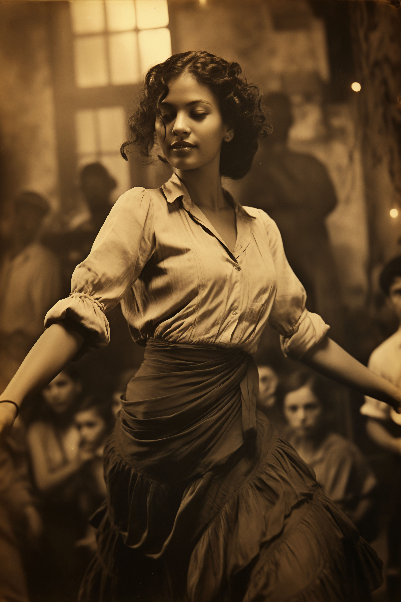

Hablemos de baile
Chat GPT define el baile como "una forma de expresión artística y corporal que utiliza el movimiento rítmico del cuerpo, generalmente acompañado de música, para comunicar emociones, contar historias o simplemente disfrutar del ritmo. Se puede realizar de manera individual, en pareja o en grupo, y varía ampliamente según la cultura, el estilo musical y el propósito (recreativo, ritual, competitivo, escénico, etc.)."
Así mismo, Chat GPT especifica los siguientes elementos clave del baile:

Historia

Aquí va un texto sobre ti: tu historia, formación, etc. ¡Hazlo atractivo y profesional!
Referentes
Salsa
Referentes de la salsa
Bacahata
Referentes de la bachata
Eventos
- Evento 1
- Evento 2
- Evento 3